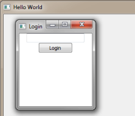

Qt WebChannel ChatClient QML Example
A QML client that communicates over a WebSocket with a QWebChannel server.

ChatClient QML provides a simple QWebChannel client implemented using JavaScript and QML.
Running the Example
To run the example, enter the following command in the client source directory:
path/to/qmlscene qmlchatclient.qml
Implementing a Web Channel Client
The client initializes a WebSocket connection to the chat server and receives an object containing all the necessary signals, slots, and properties for implementing a chat client.
After login, the client can invoke the method sendMessage and receive the signal newMessage to send and receive messages. Furthermore, a userList property provides the names of all other connected clients. It is automatically updated when its contents change. Also, the client responds to the server's keep alive signal which is needed to detect disconnected clients and remove them from the userList property.
The example shows how basic elements can be used with the client JavaScript implementation of QWebChannel, like connecting to signals (newMessage), calling slots (sendMessage), and handling property changes (userList).
The client is able to work with the Qt WebChannel ChatServer Example.
See also Qt WebChannel ChatServer Example and Qt WebChannel ChatClient HTML Example.